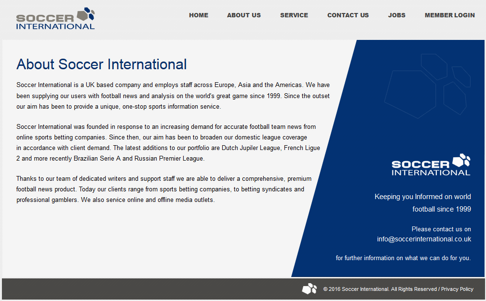

- 快人一步
- Soccerinternationl 是一家提供全世界范围的足球比赛前瞻，往期比赛的回顾，各种维度的数据统计和分析的专业足球情报机构，一站式的足球比赛伤病和分析系统。
- 关于 Soccerinternationl
- 足球世界是一家位于英国，雇员遍布欧洲，亚洲和美洲的国际公司。从1999年开始， 公司就致力于给用户提供第一手的足球新闻情报和分析。
- 在全球市场上，在线博彩和专业彩民对于准确快速的足球信息和情报要求越来越大，足球世界公司应运而生，之后，我们便根据客户的要求，覆盖越来越多的足球联赛，大到世界上最著名的五大联赛，小至荷兰乙级联赛，法国乙级联赛，乃至最近新加入的巴西甲级联赛，俄罗斯超级联赛等。
- 多亏了我们整个编辑团队的努力，撰写出一场场高质量，高准确性，简单易读的足球情报，让我们的服务客户遍布于体育博彩公司，专业投资基金，和职业博彩人等，当然，我们的情报系统也服务于线上和线下的媒体。
- 
- 我们的产品
- 我们提供世界范围内众多的足球联赛情报信息服务。我们的编辑团队都是这方面的专家，他们接受专业的培训，全职的投入于足球情报的搜集和深度分析，从英国本土，到欧洲大陆，从亚洲到美洲，我们专注于那些非常难以获得的足球信息，让用户便利的得到汇总和分析，省时省力。
- 我们提供所有和你购买的联赛相关的信息和赛后报告，用户可以随时在线上查看或者推送到邮箱。
- 信息提醒系统可以及时提醒用户有最新的信息发生，第一时间通知用户。
×